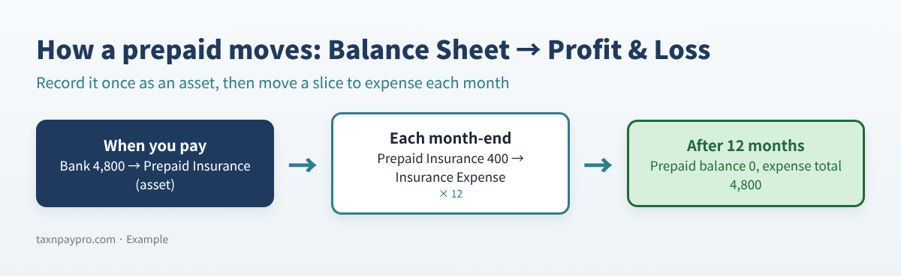
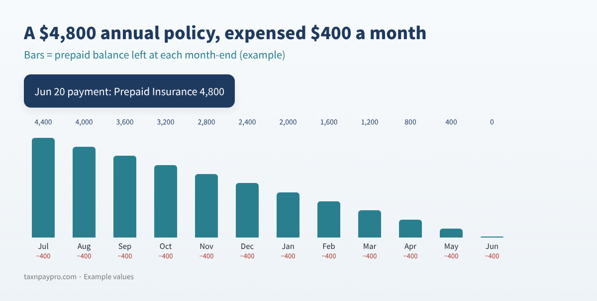
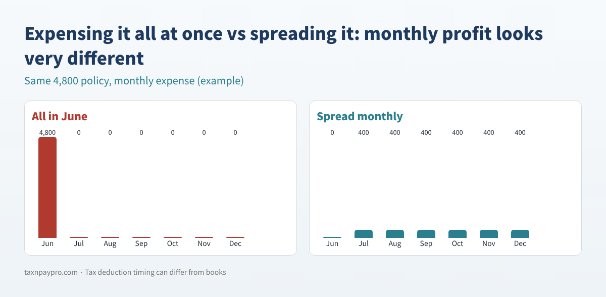

Prepaid Expenses in QuickBooks: A Simple Monthly Amortization Method (With Formulas)
↓ Get the free Excel + PDF kit for this article
You paid a full year of insurance in June, renewed your software plan in March, and put down money in November for a trade show next February. Now it is month-end. How much of all that belongs in this month's expenses?
If you expense everything the day you pay, your profit swings wildly from month to month, and your Balance Sheet hides money you have already paid for future months. QuickBooks has no built-in amortization schedule for prepaid expenses, so many owners either track it in a messy spreadsheet or forget. This guide shows you a clean way to do it by hand, in QuickBooks Desktop or QuickBooks Online, with formulas you can type yourself.
Who this is for: owners and bookkeepers on accrual books who prepay insurance, annual software, licenses, retainers for future events or similar costs.
What a prepaid expense is
A prepaid expense is a payment for something you will use over future months. On the day you pay, it is an asset (you own a year of coverage). Each month you use up a slice, and that slice moves to expense.


Step 1: Set up the account and record the payment
QuickBooks Desktop
- Lists > Chart of Accounts > Account > New, choose Other Account Types > Other Current Asset, and name it (for example "Prepaid Insurance").
- Record the payment with Write Checks or Enter Bills, choosing the prepaid account on the Expenses tab.
QuickBooks Online
- Open the Chart of accounts (type it in the search bar if the menu differs) and select New.
- Choose the current-asset account type (shown as Other Current Assets or Current assets) and, if a detail type is offered, Prepaid Expenses.
- Record the payment with + New > Expense (or Bill) and put the prepaid account in the Category column.
Step 2: Build a simple schedule
Make one row per prepaid item. You need only four inputs: amount paid, first month of service, number of months, and the date paid. Here is an example for the December 2026 close (example values only):
| Item | Amount | First month | Months | Per month | Dec 2026 | Balance left |
|---|---|---|---|---|---|---|
| General liability insurance | 4,800.00 | Jul 2026 | 12 | 400.00 | 400.00 | 2,400.00 |
| Accounting software (annual) | 1,199.00 | Mar 2026 | 12 | 99.92 | 99.92 | 199.80 |
| Trade show booth | 2,500.00 | Feb 2027 | 1 | 2,500.00 | 0.00 | 2,500.00 |
| Business auto insurance | 2,160.00 | Oct 2026 | 6 | 360.00 | 360.00 | 1,080.00 |
| Professional license renewal | 600.00 | Jan 2026 | 12 | 50.00 | 50.00 | 0.00 |
| Total | 909.92 | 6,179.80 |
Table 1. Example prepaid schedule for December 2026.
Formulas you can type
Put the month-end you are closing in H1 (for example 12/31/2026). For an item in row 2 with amount in B2, first service month in C2 (any date in that month) and months in D2:
| Column | Formula | What it does |
|---|---|---|
| Per month (E2) | =ROUND(B2/D2,2) | Straight-line, rounded to cents |
| Month number (I2) | =(YEAR($H$1)-YEAR(C2))*12+MONTH($H$1)-MONTH(C2)+1 | 1 = first month of service |
| This month (F2) | =IF(OR(I2<1,I2>D2),0,IF(I2<D2,E2,B2-E2*(D2-1))) | Last month absorbs rounding |
| Balance left (G2) | =B2-IF(I2<1,0,IF(I2<D2,E2*I2,B2)) | What is still prepaid |
Table 2. Four formulas. Copy them down for every item; the totals give your journal entry.
Why the last-month rule matters: 1,199 ÷ 12 = 99.9166… If you post 99.92 for all 12 months, you expense 1,199.04, four cents too much. Posting 99.92 for 11 months and 99.88 in the last month keeps the total at exactly 1,199.00.
Step 3: Post one journal entry each month
Group the "This month" column by account. For December 2026 in the example:
| Account | Debit | Credit |
|---|---|---|
| Insurance Expense | 760.00 | |
| Software & Subscriptions | 99.92 | |
| Dues & Licenses | 50.00 | |
| Prepaid Insurance | 760.00 | |
| Prepaid Expenses | 149.92 | |
| Total | 909.92 | 909.92 |
Table 3. December 2026 amortization entry (example values), dated 12/31/2026.
- Desktop: Company > Make General Journal Entries. To reuse the layout, memorize it (Ctrl+M), but review the amounts each month.
- Online: + New > Journal entry. For a reusable template, Intuit's help article on recurring transactions shows All apps > Accounting > Recurring transactions > New, where you pick the transaction type and choose Scheduled, Reminder or Unscheduled.
Use Reminder or Unscheduled, not Scheduled, for amortization. A scheduled entry posts the same amount every month, but your total changes when an item starts, ends or hits its rounding month. Recurring transactions are not included in every QuickBooks Online plan (an Intuit community answer says Simple Start does not have them); if yours lacks it, enter the entry each month.
Step 4: Tie out the balance
After posting, run the Balance Sheet for the same month-end and compare each prepaid account with the "Balance left" total for that account.
| Prepaid account | Schedule | Balance Sheet | Difference |
|---|---|---|---|
| Prepaid Insurance | 3,480.00 | 3,480.00 | 0.00 |
| Prepaid Expenses | 2,699.80 | 2,799.72 | 99.92 |
Table 4. Example tie-out. The 99.92 difference means one month of the software plan was never posted.

Common mistakes
- Expensing the payment directly, then also posting amortization: the cost is counted twice.
- Starting amortization in the payment month instead of the first month of service.
- Using a scheduled recurring entry that never changes when items start or end.
- Putting refundable security deposits on the schedule (they are not used up, so they are not amortized).
- Typing account names differently in the spreadsheet and the books, so the tie-out never matches.
FAQ
Do I have to amortize small prepaids?
Many small businesses set a dollar or time threshold and expense smaller items right away. Pick a consistent policy with your accountant.
Is the tax deduction the same as the book expense?
Not always. Tax rules for when a prepaid expense can be deducted can differ from book amortization. Ask your tax preparer how your prepaids are treated on your return.
What if a policy is cancelled mid-term?
Record the refund against the prepaid account, expense whatever is left that will not be refunded, and set the item's remaining months to zero.
Cash-basis books?
On cash-basis books, payments are generally expensed when paid, so a prepaid schedule is mostly an accrual-basis tool.
Checklist
- ☐ Every prepaid paid this year is on the schedule
- ☐ First month of service, not payment month, drives the start
- ☐ Monthly entry posted and debits equal credits
- ☐ Balance Sheet prepaid accounts match the schedule
- ☐ Finished items show a 0.00 balance
- ☐ Your tax preparer knows which prepaids cross into next year
Want it done faster?
You can download the ready-made Prepaid Expense Amortization Scheduler 2026-2027 for free in the Free kit download box below: the Excel workbook plus a PDF guide, no sign-up needed.
This article is educational only and is not tax, legal or accounting advice; results depend on your records. Menu names can change. QuickBooks is a registered trademark of Intuit Inc.; not affiliated with or endorsed by Intuit.
Sources: Intuit, "Prepaid expenses" help article (updated 2026-08-03): https://quickbooks.intuit.com/learn-support/en-us/help-article/expense-accounting/prepaid-expenses-amortization/L0aBbAeMQ_US_en_US · Intuit, "Create recurring invoices and other transactions in QuickBooks Online" (updated 2026-08-05): https://quickbooks.intuit.com/learn-support/en-us/help-article/recurring-transactions/create-recurring-transactions-quickbooks-online/L3WoKX2R8_US_en_US · QuickBooks Community (recurring transactions and plans): https://quickbooks.intuit.com/learn-support/en-us/reports-and-accounting/re-what-level-quickbooks-online-includes-automatic-monthly/01/1098255/highlight/true
Free kit download
Tools to follow this article step by step. No sign-up needed.
- Excel workbook (.xlsx)Prepaid_Expense_Amortization_Scheduler_2026_EN.xlsx · 45 KB
- Step-by-step guide (PDF)Prepaid_Expense_Amortization_Guide_2026_EN.pdf · 81 KB
Free to use for yourself and your own business; please do not resell or redistribute. General information, not tax, legal or accounting advice; check every figure against your own records. QuickBooks is a trademark of Intuit Inc.; BIZLEX is not affiliated with Intuit.